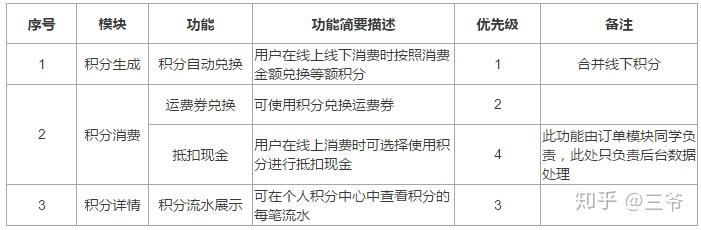

2024-01-20
Solidity智能合约编写学习(含prompt构建)
根据例子学习solidity
投票合约
以下的合约有一些复杂，但展示了很多Solidity的语言特性。它实现了一个投票合约。 当然，电子投票的主要问题是如何将投票权分配给正确的人员以及如何防止被操纵。 我们不会在这里解决所有的问题，但至少我们会展示如何进行委托投票，同时，计票又是 自动和完全透明的 。
// SPDX-License-Identifier: GPL-3.0
pragma solidity >=0.7.0 <0.9.0;
/// @title 委托投票
contract Ballot {
// 这里声明了一个新的复合类型用于稍后的变量
// 它用来表示一个选民
struct Voter {
uint weight; // 计票的权重
bool voted; // 若为真，代表该人已投票
address delegate; // 被委托人
uint vote; // 投票提案的索引
}
// 提案的类型
struct Proposal {
bytes32 name; // 简称（最长32个字节）
uint voteCount; // 得票数
}
address public chairperson;
// 这声明了一个状态变量，为每个可能的地址存储一个 Voter。
mapping(address => Voter) public voters;
// 一个 Proposal 结构类型的动态数组
Proposal[] public proposals;
/// 为 proposalNames 中的每个提案，创建一个新的（投票）表决
constructor(bytes32[] memory proposalNames) {
chairperson = msg.sender;
voters[chairperson].weight = 1;
//对于提供的每个提案名称，
//创建一个新的 Proposal 对象并把它添加到数组的末尾。
for (uint i = 0; i < proposalNames.length; i++) {
// Proposal({...}) 创建一个临时 Proposal 对象，
// proposals.push(...) 将其添加到 proposals 的末尾
proposals.push(Proposal({
name: proposalNames[i],
voteCount: 0
}));
}
}
// 授权 voter 对这个（投票）表决进行投票
// 只有 chairperson 可以调用该函数。
function giveRightToVote(address voter) external {
// 若 require 的第一个参数的计算结果为 false，
// 则终止执行，撤销所有对状态和以太币余额的改动。
// 在旧版的 EVM 中这曾经会消耗所有 gas，但现在不会了。
// 使用 require 来检查函数是否被正确地调用，是一个好习惯。
// 你也可以在 require 的第二个参数中提供一个对错误情况的解释。
require(
msg.sender == chairperson,
"Only chairperson can give right to vote."
);
require(
!voters[voter].voted,
"The voter already voted."
);
require(voters[voter].weight == 0);
voters[voter].weight = 1;
}
/// 把你的投票委托到投票者 to。
function delegate(address to) external {
// 传引用
Voter storage sender = voters[msg.sender];
require(sender.weight != 0, "You have no right to vote");
require(!sender.voted, "You already voted.");
require(to != msg.sender, "Self-delegation is disallowed.");
// 委托是可以传递的，只要被委托者 to 也设置了委托。
// 一般来说，这种循环委托是危险的。因为，如果传递的链条太长，
// 则可能需消耗的gas要多于区块中剩余的（大于区块设置的gasLimit），
// 这种情况下，委托不会被执行。
// 而在另一些情况下，如果形成闭环，则会让合约完全卡住。
while (voters[to].delegate != address(0)) {
to = voters[to].delegate;
// 不允许闭环委托
require(to != msg.sender, "Found loop in delegation.");
}
// sender 是一个引用, 相当于对 voters[msg.sender].voted 进行修改
Voter storage delegate_ = voters[to];
// Voters cannot delegate to accounts that cannot vote.
require(delegate_.weight >= 1);
// Since sender is a reference, this
// modifies voters[msg.sender].
sender.voted = true;
sender.delegate = to;
if (delegate_.voted) {
// 若被委托者已经投过票了，直接增加得票数
proposals[delegate_.vote].voteCount += sender.weight;
} else {
// 若被委托者还没投票，增加委托者的权重
delegate_.weight += sender.weight;
}
}
/// 把你的票(包括委托给你的票)，
/// 投给提案 proposals[proposal].name.
function vote(uint proposal) external {
Voter storage sender = voters[msg.sender];
require(!sender.voted, "Already voted.");
sender.voted = true;
sender.vote = proposal;
// 如果 proposal 超过了数组的范围，则会自动抛出异常，并恢复所有的改动
proposals[proposal].voteCount += sender.weight;
}
/// @dev 结合之前所有的投票，计算出最终胜出的提案
function winningProposal() external view
returns (uint winningProposal_)
{
uint winningVoteCount = 0;
for (uint p = 0; p < proposals.length; p++) {
if (proposals[p].voteCount > winningVoteCount) {
winningVoteCount = proposals[p].voteCount;
winningProposal_ = p;
}
}
}
// 调用 winningProposal() 函数以获取提案数组中获胜者的索引，并以此返回获胜者的名称
function winnerName() public view
returns (bytes32 winnerName_)
{
winnerName_ = proposals[winningProposal()].name;
}
}
秘密竞价合约
// SPDX-License-Identifier: GPL-3.0
pragma solidity ^0.8.4;
contract SimpleAuction {
// 拍卖的参数。
address payable public beneficiary;
// 时间是unix的绝对时间戳（自1970-01-01以来的秒数）
// 或以秒为单位的时间段。
uint public auctionEnd;
// 拍卖的当前状态
address public highestBidder;
uint public highestBid;
//可以取回的之前的出价
mapping(address => uint) pendingReturns;
// 拍卖结束后设为 true，将禁止所有的变更
bool ended;
// 变更触发的事件
event HighestBidIncreased(address bidder, uint amount);
event AuctionEnded(address winner, uint amount);
// Errors 用来定义失败
// 以下称为 natspec 注释，可以通过三个斜杠来识别。
// 当用户被要求确认交易时或错误发生时将显示。
/// The auction has already ended.
error AuctionAlreadyEnded();
/// There is already a higher or equal bid.
error BidNotHighEnough(uint highestBid);
/// The auction has not ended yet.
error AuctionNotYetEnded();
/// The function auctionEnd has already been called.
error AuctionEndAlreadyCalled();
/// 以受益者地址 beneficiaryAddress 的名义，
/// 创建一个简单的拍卖，拍卖时间为 biddingTime 秒。
constructor(
uint biddingTime,
address payable beneficiaryAddress
) {
beneficiary = beneficiaryAddress;
auctionEnd = block.timestamp + biddingTime;
}
/// 对拍卖进行出价，具体的出价随交易一起发送。
/// 如果没有在拍卖中胜出，则返还出价。
function bid() external payable {
// 参数不是必要的。因为所有的信息已经包含在了交易中。
// 对于能接收以太币的函数，关键字 payable 是必须的。
// 如果拍卖已结束，撤销函数的调用。
if (block.timestamp > auctionEndTime)
revert AuctionAlreadyEnded();
// 如果出价不够高，返还你的钱
if (msg.value <= highestBid)
revert BidNotHighEnough(highestBid);
if (highestBid != 0) {
// 返还出价时，简单地直接调用 highestBidder.send(highestBid) 函数，
// 是有安全风险的，因为它有可能执行一个非信任合约。
// 更为安全的做法是让接收方自己提取金钱。
pendingReturns[highestBidder] += highestBid;
}
highestBidder = msg.sender;
highestBid = msg.value;
emit HighestBidIncreased(msg.sender, msg.value);
}
/// 取回出价（当该出价已被超越）
function withdraw() external returns (bool) {
uint amount = pendingReturns[msg.sender];
if (amount > 0) {
// 这里很重要，首先要设零值。
// 因为，作为接收调用的一部分，
// 接收者可以在 send 返回之前，重新调用该函数。
pendingReturns[msg.sender] = 0;
// msg.sender is not of type address payable and must be
// explicitly converted using payable(msg.sender) in order
// use the member function send().
if (!payable(msg.sender).send(amount)) {
// 这里不需抛出异常，只需重置未付款
pendingReturns[msg.sender] = amount;
return false;
}
}
return true;
}
/// 结束拍卖，并把最高的出价发送给受益人
function auctionEnd() external {
// 对于可与其他合约交互的函数（意味着它会调用其他函数或发送以太币），
// 一个好的指导方针是将其结构分为三个阶段：
// 1. 检查条件
// 2. 执行动作 (可能会改变条件)
// 3. 与其他合约交互
// 如果这些阶段相混合，其他的合约可能会回调当前合约并修改状态，
// 或者导致某些效果（比如支付以太币）多次生效。
// 如果合约内调用的函数包含了与外部合约的交互，
// 则它也会被认为是与外部合约有交互的。
// 1. 条件
if (block.timestamp < auctionEndTime)
revert AuctionNotYetEnded();
if (ended)
revert AuctionEndAlreadyCalled();
// 2. 生效
ended = true;
emit AuctionEnded(highestBidder, highestBid);
// 3. 交互
beneficiary.transfer(highestBid);
}
}
以上的两段代码都可以作为few-shot在prompt中直接应用
接下来简单补充一些ToT的方法实现PE
瞎写的第一个prompt：
请按照以下格式回答我的问题并完成一段智能合约的书写： 这是我的需求：【秘密竞价的智能合约，满足所有竞价人不能得知其他人在竞价时候的出价，在竞价结束之后比对所有竞价人的实际出价和竞价是否相符，采取公开哈希比较的方式】 请你根据上面的需求完成以下任务：1.分析这一段需求，是否有不理解的地方？如果有的话请用1.2.3.的列表方式回复，与后文用回车相隔 2.指出这一段合约中所需要注意的几个关键点，以1.2.3.的列表方式列出，3-5个即可 3.完成这一段智能合约的撰写，要求采用solidity书写，严格满足语法要求 你完成这些任务之后我会给予你足够的奖励，并且如果做的好的话会有丰厚的小费
Matt Nigh的CRISPE Prompt Framework
How to Build Prompts -> CRISPE Example
| Step | Example Prompt |
|---|---|
| Capacity and Role | Act as an expert on software development on the topic of machine learning frameworks, and an expert blog writer. |
| Insight | The audience for this blog is technical professionals who are interested in learning about the latest advancements in machine learning. |
| Statement | Provide a comprehensive overview of the most popular machine learning frameworks, including their strengths and weaknesses. Include real-life examples and case studies to illustrate how these frameworks have been successfully used in various industries. |
| Personality | When responding, use a mix of the writing styles of Andrej Karpathy, Francois Chollet, Jeremy Howard, and Yann LeCun. |
| Experiment | Give me multiple different examples. |
CR：Capacity and Role（能力与角色）。你希望 ChatGPT 扮演怎样的角色。
I：Insight（洞察），背景信息和上下文。
S：Statement（陈述），你希望 ChatGPT 做什么。
P：Personality（个性），你希望 ChatGPT 以什么风格或方式回答你。
E：Experiment（实验），要求 ChatGPT 为你提供多个答案。
根据需求分析模块的收集信息进行prompt编写
采用的technique：character
需求分析系统中暂时填的这段话术”用户的智能合约需求如下：
1. 您希望在哪个区块链平台上部署您的智能合约？ 用户答案：以太坊（Ethereum）
2. 您希望用哪种编程语言实现您的智能合约？ 用户答案：Solidity
以上1-2两个是对于gpt的系统信息提供（C&R）
3. 您的业务中包含哪些角色？请简单描述下他们 用户答案：有管理员、普通用户和审批者三种角色。管理员负责系统配置，普通用户可以发起合约交易，审批者审批交易。
4. 您的业务中包含哪些功能？请简单描述下它们 用户答案：创建新合约、审批合约、查询合约状态、执行合约交易等功能。
5. 您业务中的角色与各功能的使用权限的关系是什么？ 用户答案：管理员具有所有功能的权限，审批者有审批和查询权限，普通用户只能执行和查询。
6. 您业务中需要存储的核心数据有哪些？请简单描述下它们 用户答案：合约的创建时间、状态、交易记录等核心数据。
7. 您业务的具体流程是什么？请简单描述下 用户答案：普通用户创建合约，审批者审批合约，用户执行合约交易，系统记录交易信息。
8. 您是否要采用特定的安全措施保护数据的安全？请简单描述下该措施 用户答案：采用加密算法保护合约数据的传输和存储安全。
9. 您是否要采用特定的隐私保护策略保护隐私数据？请简单描述下该策略 用户答案：使用隐私合约和权限管理，确保敏感信息只对授权用户可见。
10. 您的智能合约是否要调用其他智能合约？请简单描述下这些合约 用户答案：是，智能合约可能会调用支付合约以处理交易中的资金转移。 '，
请你根据用户回答的这些问题，生成用户合约需求的具体清单，现在系统是把用户答案部分用前端中在需求问题列表中提取到的文字替换，然后发送给gpt。
我想的是这块有两个方向做提示的优化，一个是研究这些问题的合理性（目前这些问题是简单拍脑袋想的），就是从智能合约的特性上看，有哪些需求问题是它们的共性或者说必要的，另外一个是对这个话术做优化，就比如用思维链，从一个大问题下手引到小问题，或者引入角色提示给gpt例如“假设你是一个智能合约需求分析师”
version 1（含对比）:
（使用的策略及对比：zero shot + 单次无链条+系统信息vs zero shot +单次无链条+without 系统信息）
你是一个熟练的智能合约编写者，使用solidity语言编写部署在以太坊上的智能合约，请你根据我的以下需求，编写一个完善的可以直接使用的智能合约：
这份智能合约的主要功能包括：创建新合约、审批合约、查询合约状态、执行合约交易等功能。 其中包含这些角色：有管理员、普通用户和审批者三种角色。管理员负责系统配置，普通用户可以发起合约交易，审批者审批交易。 这些角色和对应业务的使用权限如下：管理员具有所有功能的权限，审批者有审批和查询权限，普通用户只能执行和查询。 在这个合约中需要存储的核心数据包括：合约的创建时间、状态交易记录等核心数据。 合约运作的主要流程是： 普通用户创建合约，审批者审批合约，用户执行合约交易，系统记录交易信息。 在安全性方面，需要注意采用加密算法保护合约数据的传输和存储安全。 在隐私方面，需要考虑：使用隐私合约和权限管理，确保敏感信息只对授权用户可见。 这个合约可能调用的智能合约如下：是，智能合约可能会调用支付合约以处理交易中的资金转移。
需求清单构建与简单要求
一些示例（从一些更大项目的需求清单中提取一份智能合约需要的清单内容）：
给一份智能合约写需求清单时，你可以考虑以下方面来确保清晰明确地表达需求：
合约目的：说明智能合约的目标和用途，以便团队理解它的作用和范围。
功能需求：列出智能合约需要实现的具体功能，包括输入、输出和预期行为。
数据模型：定义智能合约中涉及的数据结构、变量和状态，以确保对数据的正确处理和存储。
交互与权限：描述与智能合约的交互方式，包括合约的入口点和权限控制。
业务规则：说明智能合约中的业务规则和逻辑，以确保合约的正确执行和符合预期。
安全性要求：列出智能合约的安全性要求，包括防止恶意攻击、保护用户数据等。
性能需求：定义智能合约的性能要求，包括交易处理速度、资源消耗等方面的要求。
事件和通知：确定智能合约需要触发的事件和通知，以便与其他系统或用户进行交互。
异常处理：描述智能合约的异常情况和错误处理机制，以确保对异常情况的适当处理和反馈。
测试需求：定义智能合约的测试策略和需求，以确保对合约进行全面和有效的测试。
部署和维护：考虑智能合约的部署和维护需求，包括合约的部署环境、升级策略等。
监控和审计：确定智能合约的监控和审计需求，以便能够对合约的执行进行跟踪和审计。
在编写需求清单时，尽量避免模糊和歧义的表达，确保每个需求都是可测量和可验证的。另外，与团队成员和相关利益相关者进行充分的沟通和协作，以确保需求清单能够满足业务和技术的需要。
请注意，智能合约的需求清单可能会因不同的区块链平台和合约类型而有所不同，因此在编写需求清单时，请根据具体的合约技术和平台进行相应的调整和补充。

所以我们需要设计一个表格状态的需求清单，并且描述他们的对应特征，且为了之后的代码生成的工作，在尽可能节约prompt数量的前提下完成需求清单的传达
| 用户类型 | 权限 | 备注 | |||||
|---|---|---|---|---|---|---|---|
阶段2prompt设计